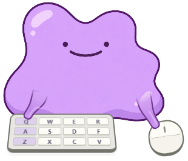

실제 앱 화면메타몽
데스크톱 펫
내가 누르는 키를 메타몽도 꾹.
타이핑과 클릭에 맞춰 움직여요.
v0.2.1 64비트 122 MB
무료 테스트 배포판입니다. 코드 서명이 없어 Windows에서 게시자 확인 경고가 나타날 수 있어요.
설치하고 시작하기
- Windows PC에서 파일 받기
휴대폰이라면 위 링크를 복사해서 PC에서 열어주세요.
- 설치 파일 실행하기
설치 위치를 선택하고 완료한 뒤, 시작 메뉴에서 Rokeshot Pet을 실행하세요.
- 타이핑해 보기
입력 반응은 처음부터 켜져 있어요. 캐릭터를 드래그하면 위치를 옮길 수 있어요.
어떤 입력에 반응하나요?
Q W E R · A S D F · Z X C V키마다 왼팔이 해당 버튼으로 움직여요. 오른팔은 마우스 왼쪽·오른쪽 클릭에 따로 반응하고, 꾹 누르면 누른 자세를 유지해요.
설정과 종료는 어디에 있나요?
작업 표시줄 알림 영역의 보라색 펫 아이콘을 누르면 설정이 열려요. 크기 조절, 입력 반응 끄기, 펫 숨기기를 할 수 있어요. 완전히 끄려면 설정의 종료를 눌러주세요.
입력 내용이 저장되나요?
입력 이벤트는 캐릭터 반응을 위해 PC 안에서만 처리해요. 입력한 문장을 저장하거나 서버로 전송하지 않아요. 크기·위치 같은 앱 설정만 PC에 저장돼요.
어디까지 검증했나요?
Windows 자동 환경에서 설치·실행·제거와 OS 키 입력 전달·누름 유지를 확인했어요. 기본 테스트 28개도 통과했어요. 마우스는 이벤트 전달과 좌우 버튼 표시를 검사했어요.
실제 Windows 10·11 PC의 물리 키보드·마우스 테스트는 별도입니다. ARM 전용 빌드는 제공하지 않아요.